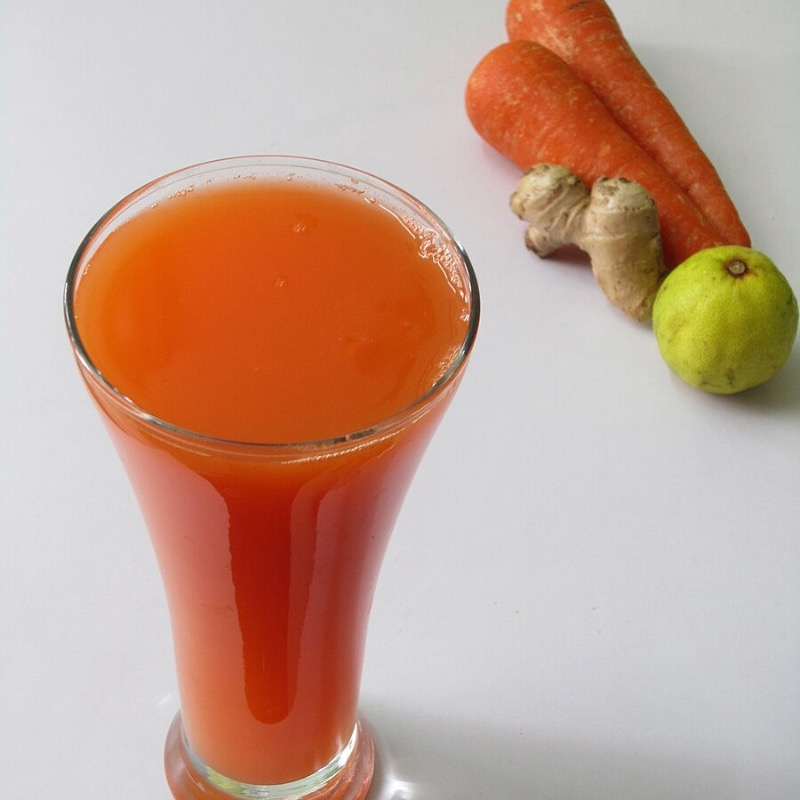
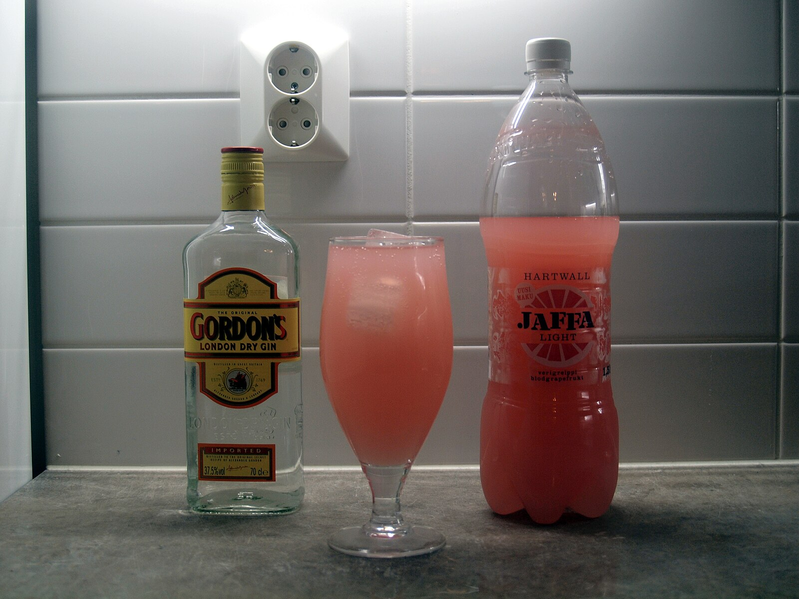
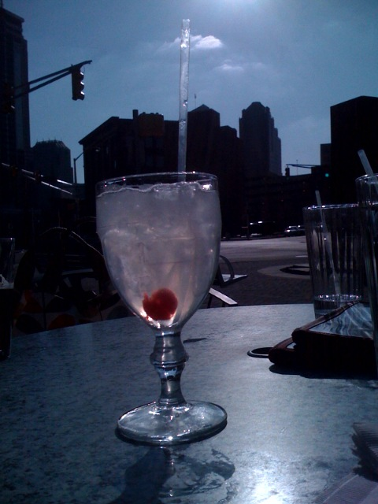

Vitamin Parade
Ingredients:
- 2 ounces fresh carrot juice
- 3/4 ounce fresh pineapple juice
- 3/4 ounce lemon juice, freshly squeezed
- 1/2 ounce cinnamon syrup
- 1 organic egg white
- Ginger beer, to top
- Garnish: pineapple wedge
Steps:
- Combine the carrot juice, pineapple juice, lemon juice, syrup, and egg white in a shaker.
- Dry-shake with no ice for 15-20 seconds until foam forms.
- Add ice and shake. Fine-strain into a fizz glass.
- Top with ginger beer.
- Express a lemon twist over the cocktail then discard.
- Garnish with a pineapple wedge.
- Add sous-vide cinnamon syrup.
Tools:
- Juicer or extractor

Mental Note
Ingredients:
- 2 ounces of grapefruit juice, freshly squeezed
- 1 ounce lemon juice, freshly squeezed
- 3/4 ounce fresh beet juice
- 1/2 ounce Tahitian Vanilla Syrup
- 1 heaping barspoon raspberry preserves, with seeds
- Garnish: grapefruit crescent
- Garnish: lemon wheel
Steps:
- Combine the grapefruit juice, lemon juice, beet juice, syrup, and raspberry preserves in a shaker.
- Add cube ice and shake.
- Fine-strain into a festive glass over crushed ice.
- Snow-cone, or create a dome over the top of the drink, with additional ice.
- Garnish with a grapefruit crescent and lemon wheel. Serve with a straw.
- To make Tahitian Vanilla Syrup: In a medium bowl, combine 500 grams (about 2 cups) simple syrup, 4 grams (about 1 teaspoon) Tahitian vanilla extract, 2 grams (about 2 teaspoons) lactic acid, and 1 pinch kosher salt. Using a whisk, combine until the lactic acid and salt are dissolved. Store in a sealed container in the fridge for up to 4 weeks.
Tools:
- Juicer or extractor

Garden Collins
Ingredients:
- 1 ½ ounces seedlip garden
- 1/2 ounce brewed green tea
- 3/4 ounce celery syrup
- 3/4 ounce lemon juice, freshly squeezed
- 1 ounce ginger ale
- Garnish: garden herbs such as rosemary and spearmint
- Garnish: lemon peel
Steps:
- Add seedlip garden, lemon juice, green tea, and celery syrup to a shaking tin filled with cracked ice.
- Shake for 10-15 seconds to mix ingredients together and to chill your beverage.
- Strain into 10-ounce highball glass over a large ice cube.
- Top with ginger ale and stir with a barspoon.
- Garnish with fresh herbs and a lemon peel.
- To make celery syrup: juice 7-8 celery stalks in vegetable juice until you get 400 grams (roughly 1 2/3 cups) of juice. Place 800 grams (roughly 3 1/3 cups) of granulated cane sugar in the celery juice and stir until sugar particles are dissolved. Place into an airtight container and refrigerate.
Tools:
- Juicer or extractor
